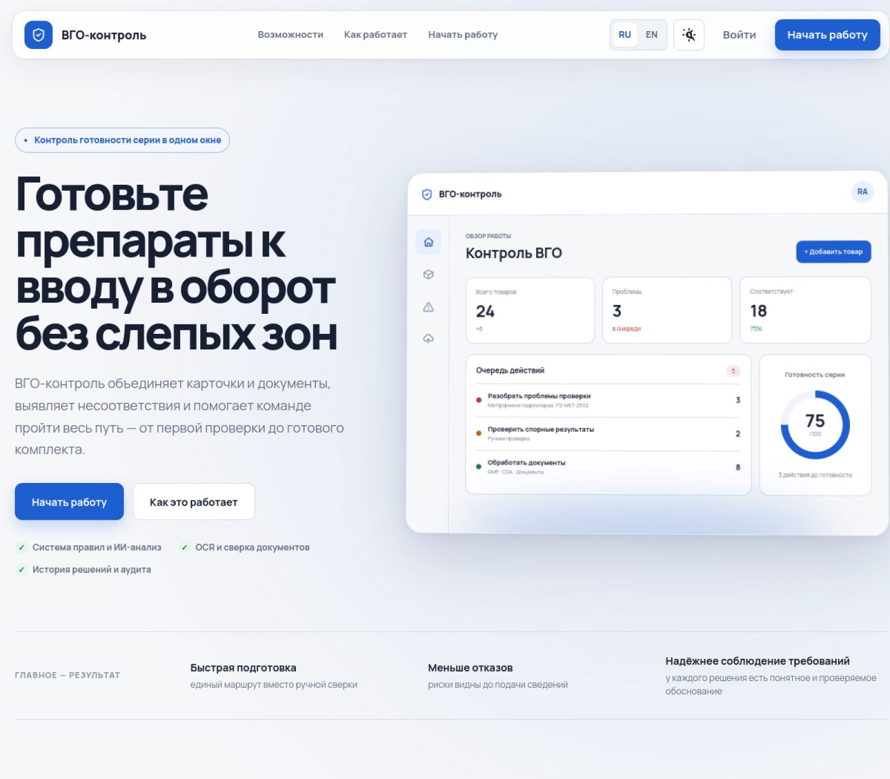
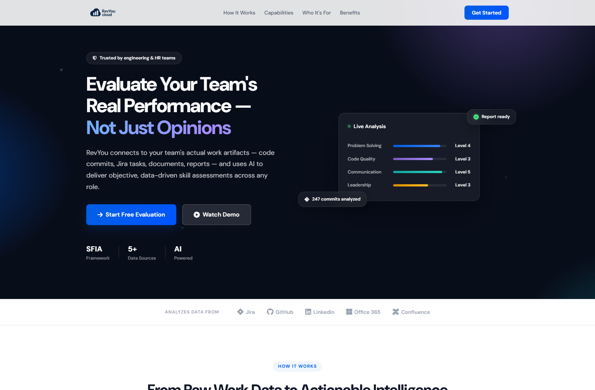
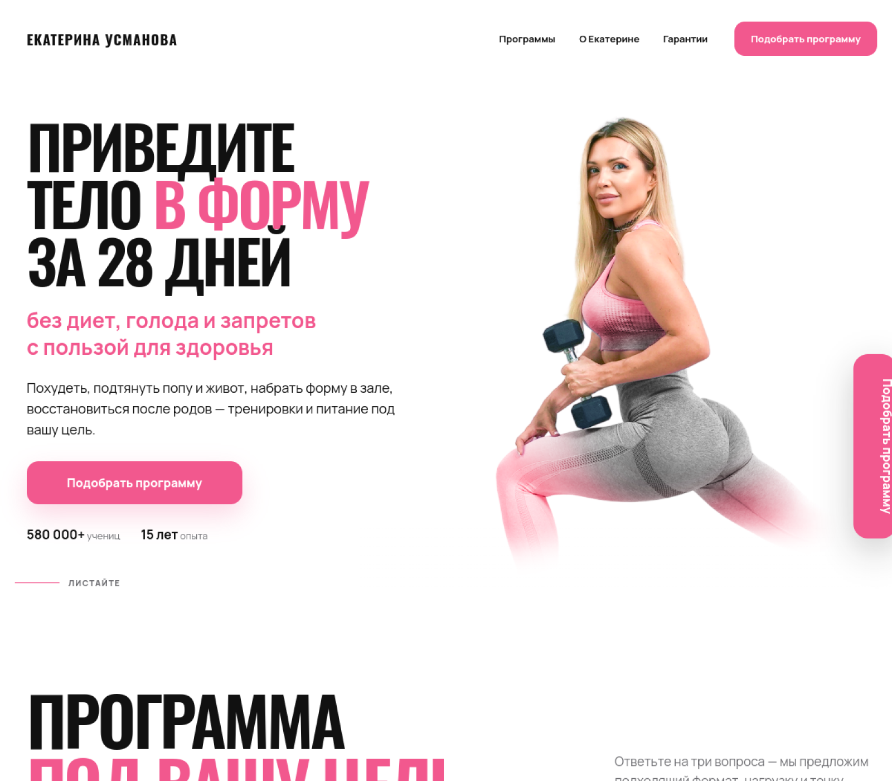

Сайт для заявок
Лендинг или компактный сайт с ясным предложением, формой обращения и удобной мобильной версией.
Разработка под конкретный бизнес-процесс
Начинаем с небольшого оплачиваемого пилота: фиксируем одну задачу, объём, срок и результат. После пилота вы решаете, развивать решение дальше или остановиться на готовом первом контуре.
Сначала проверяем самое важное предположение — без разработки большого продукта вслепую.
Что можно сделать
Лендинг или компактный сайт с ясным предложением, формой обращения и удобной мобильной версией.
Личный кабинет, внутренняя система или первый контур продукта для нового рабочего процесса.
Приём заявок, выдача информации, сценарии записи и автоматизация повторяющихся операций.
Избранные проекты
01 / B2B-платформа
Рабочий контур для подготовки лекарственных препаратов и фармацевтических субстанций к вводу в гражданский оборот.

Открыть проект ↗Карточки препаратов, документы и результаты проверок нужно свести в один последовательный процесс, чтобы команда видела несоответствия и следующий шаг по каждой серии.
Платформа объединяет данные товара и комплект документов, извлекает сведения из файлов, запускает проверки и собирает спорные результаты в понятную очередь работы.
Главный разработчик всей технической части: архитектура, backend, frontend, обработка документов, OCR, AI-проверки и инфраструктура.
02 / B2B-стартап
Сервис, который собирает рабочие артефакты команды и превращает разрозненные данные в структурированную основу для оценки навыков.

Открыть проект ↗Данные о работе сотрудников находятся в разных системах: код и pull request — в GitHub, задачи — в Jira, документы — в Confluence. Для анализа их нужно собрать и привести к единой структуре.
B2B-сервис подключает рабочие источники, обрабатывает артефакты в фоне и формирует AI-анализ по фактическим результатам работы.
Главный разработчик технической части: архитектура продукта, backend и frontend, интеграции, фоновые задачи, AI-анализ и инфраструктура.
03 / Частный бизнес
Демо-лендинг фитнес-программ, который помогает посетителю разобраться в предложении и подобрать подходящий формат.

Открыть демо ↗У частного эксперта несколько программ для разных целей и уровней подготовки. Простого перечня недостаточно: человеку нужен понятный путь к подходящему варианту.
Mobile-first лендинг с визуальным каталогом и коротким квизом, который ведёт от цели пользователя к персональной рекомендации и заявке.
Спроектировал структуру, собрал адаптивный интерфейс и реализовал интерактивный сценарий подбора программы без сборщика.
Формат работы
Выбираем одну важную задачу и заранее фиксируем, что именно войдёт в оплачиваемый пилот.
Определяем пользователя, рабочий сценарий и ожидаемый результат.
Согласуем объём, срок, стоимость и критерии готовности до начала работы.
Делаю работающий первый контур, который можно показать команде и проверить на реальном процессе.
После демонстрации и передачи материалов вы решаете, нужен ли следующий этап.
Следующий шаг
Я уточню исходные данные и предложу границы первого пилота. Без бесплатной разработки и обещаний результата, который нельзя проверить.